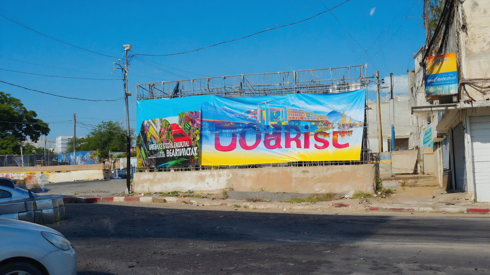
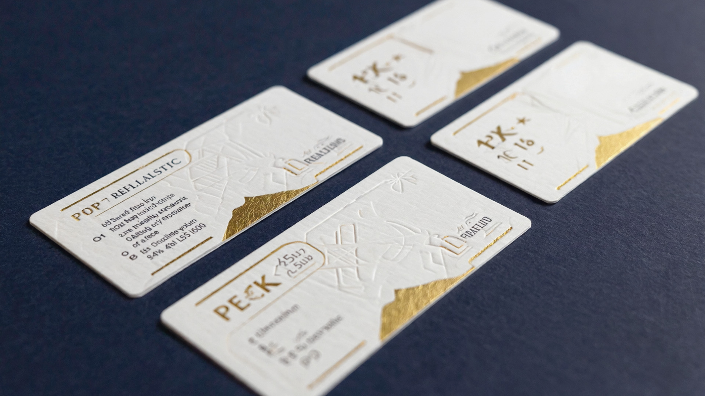
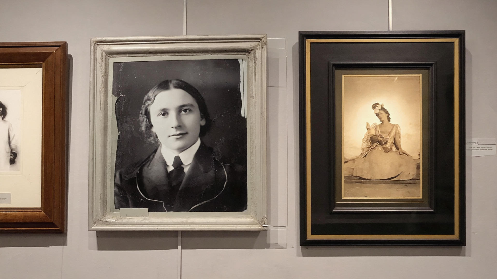

Yiri Services propose un service complet d'impression Korhogo pour valoriser votre image, vos événements et vos activités professionnelles. Nous réalisons des impressions sur bâche, vinyl, Plexiglass, cartes PVC, badges, maillots, cartes de visite et autres supports.
Grâce à des équipements adaptés, nous assurons une impression bâche Côte d'Ivoire avec des couleurs vives, une bonne résistance au soleil et aux intempéries, que ce soit pour vos banderoles, panneaux, enseignes ou supports promotionnels. Que vous soyez à Korhogo ou dans la région, Yiri Services vous accompagne de la création du visuel à la livraison du produit fini.

Nous réalisons des bâches publicitaires, banderoles, kakemonos, panneaux de chantier et affiches grand format. Nos bâches sont idéales pour les campagnes promotionnelles, les cérémonies, les opérations de communication et les chantiers BTP. L'impression bâche Côte d'Ivoire est effectuée avec une bonne définition d'image et une excellente durabilité.

Pour une communication plus premium, nous proposons l'impression sur Plexiglass, avec possibilité d'effet miroir pour enseignes, plaques professionnelles, signalétique intérieure et décoration. Ce support donne un rendu moderne et élégant, parfait pour les bureaux, hôtels, boutiques et salons de beauté à Korhogo.

Yiri Services réalise vos cachets numériques et tampons personnalisés avec votre logo, votre raison sociale et vos mentions légales. Indispensables pour les entreprises, ONG, cabinets et administrations, nos cachets vous offrent un marquage propre et professionnel sur tous vos documents.
Nous proposons le flocage de maillots de football, handball, basket, et autres sports pour clubs, écoles et tournois locaux. Numéros, noms, sponsors : tout est personnalisable avec une impression résistante aux lavages.
Réalisation de cartes PVC (cartes d'adhérent, cartes d'étudiant, cartes d'accès) et de badges professionnels avec photo, logo et QR code si besoin. Idéales pour sécuriser l'accès à vos locaux et identifier clairement vos équipes et partenaires.
Nous concevons et imprimons des cartes de visite premium, avec différents grammages, finitions (mat, brillant), coins arrondis ou classiques. Une belle carte de visite renforce votre crédibilité auprès de vos clients et partenaires en Côte d'Ivoire.

Nous proposons un service de restauration de photos anciennes : recadrage, amélioration, impression sur support de qualité. Idéal pour vos souvenirs de famille, vos archives d'entreprise ou vos affiches commémoratives.
Nous mettons un point d'honneur à respecter vos délais, en particulier pour les événements et campagnes urgentes. La qualité d'impression, le choix des supports et la finition sont contrôlés à chaque étape pour garantir un rendu professionnel.
Demandez votre devis d'impression Korhogo (bâche, vinyl, cartes, maillots, badges) au +225 07 09 43 62 74 ou par email à direction@yiriservices-ci.com.
Demander un Devis